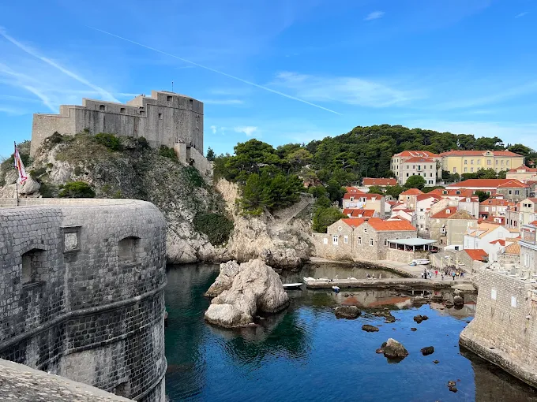

Hrvatska je država u srednjoj i jugoistočnoj Europi. Na kopnu graniči sa Slovenijom, Mađarskom, Srbijom, Bosnom i Hercegovinom te Crnom Gorom, a morem s Italijom. Glavni i najveći grad je Zagreb.
Hrvatska ima tri velike prirodne cjeline: panonsku, gorsku i jadransku. Uz obalu Jadranskog mora nalazi se više od tisuću otoka, otočića i hridi. Članica je Europske unije od 1. srpnja 2013. godine.
